Chapter 4 Results
4.1 Response to RQ1: Where People Live – Population Estimation
4.1.1 MGWR Model Performance
To justify the use of a local approach, the Multi-scale Geographically Weighted Regression (MGWR) was benchmarked against a global Ordinary Least Squares (OLS) model. As shown in Table 4.1, MGWR provides a substantially better fit, with an Adjusted \(R^{2}\) of 0.789 compared to 0.668 for OLS, and an AICc of 364.814 versus 442.420. The ΔAICc of 77.6 decisively favors MGWR, confirming its suitability for disaggregating population in Jaipur.
| Metric | OLS | MGWR | Interpretation |
|---|---|---|---|
| R² | 0.672 | 0.817 | Preliminary measure of fit; higher values indicate improved fit but can be inflated in local models. |
| Adjusted R² | 0.668 | 0.789 | Normalizes for model complexity; MGWR demonstrates superior explanatory performance. |
| AICc | 442.420 | 364.814 | Most reliable indicator; ΔAICc = 77.594 decisively favors MGWR (lower is better). |
Beyond global fit indices, diagnostic checks confirmed the validity of the model. Moran’s I on MGWR residuals (\(I = 0.0624, p = 0.0822\)) indicated no significant global spatial autocorrelation. The residual map (Figure 4.1), however, reveals localized patterns: central wards show balanced predictions, while the east and southeast display areas of systematic overestimation and the north–northeast shows systematic underestimation. Western districts present a fragmented mix of positive and negative residuals, highlighting local instability in model performance.
Further regression diagnostics reinforced these findings. The residual–fitted scatterplot demonstrated homoscedasticity, while the Q–Q plot indicated that the residuals follow an approximately normal distribution (Figure 4.2).
An assessment of local multicollinearity using the Condition Number (CN) revealed that values across most of the study area ranged from 2 to 8, indicating stable parameter estimates. Although some central locations exhibited moderate CN values (10–17), these remain well below the critical threshold of 30 that signals severe collinearity, confirming that multicollinearity is not a substantive concern in the model(Figure 4.3). In summary, the comparison with OLS and the full set of diagnostic checks confirm that MGWR is both statistically robust and spatially reliable, providing confidence in using its outputs as the basis for high-resolution population mapping in Jaipur.
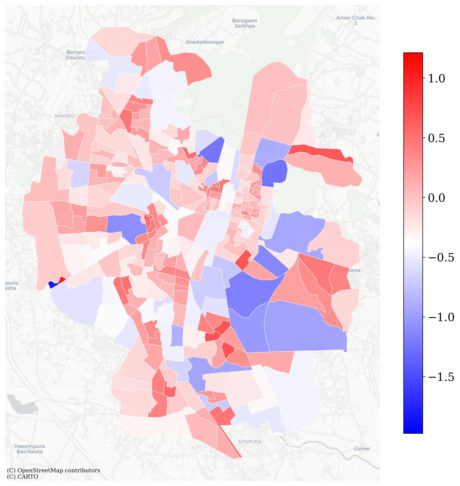
Figure 4.1: MGWR Residuals Distribution Map
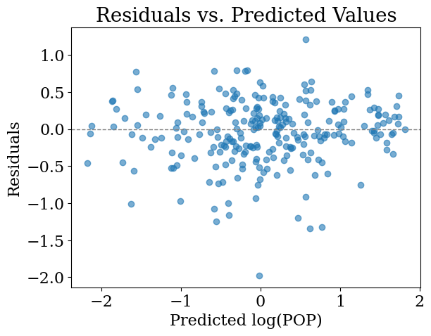
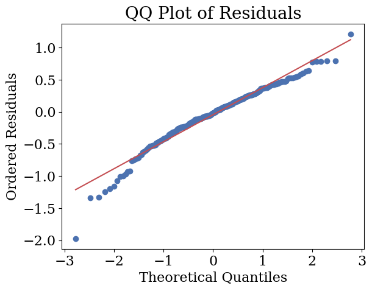
Figure 4.2: Residual Diagnostics: Residual–fitted and Q–Q plot
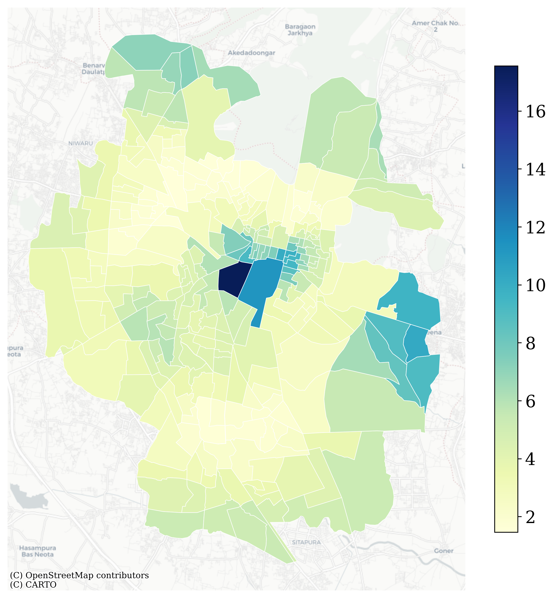
Figure 4.3: MGWR Local Multicollinearity Test using Condition Number
4.1.2 Estimated Population Maps
Figure 4.4 compares the ward-level population distribution with the MGWR-derived 100 m raster estimates. While the ward-level map provides a broad overview, its reliance on administrative boundaries produces artificial discontinuities and conceals intra-ward heterogeneity.
Using weights estimated from the MGWR model, ward populations were disaggregated onto a 100 m grid. The resulting surface reveals finer spatial detail, with pronounced concentrations along Jaipur’s central urban corridors and particularly dense clusters in the historic core. Secondary concentrations are also visible in the northwest and southeast, reflecting emerging population centres. Non-residential areas remain blank by design, reflecting the methodological assumption that only residential zones accommodate population.
The gridded representation offers a more nuanced view of settlement patterns by mitigating boundary effects and uncovering within-ward variation that coarse administrative data cannot capture.
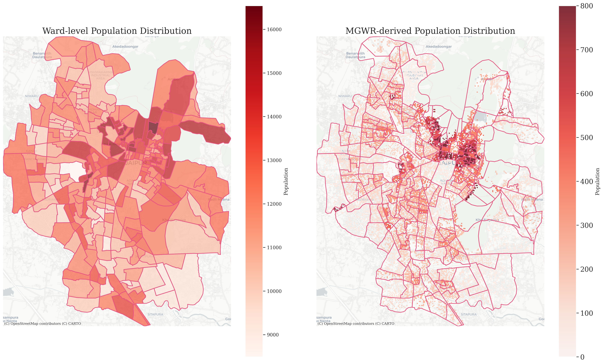
Figure 4.4: Ward-level Population Distribution vs MGWR-derived Population Distribution
4.1.3 Distribution Validation with GHSL
To assess the plausibility of the MGWR-based disaggregation, the resulting population grid was compared with the 2020 GHSL (GHS-POP) estimates for Jaipur. GHSL was selected as a reference because it applies a similar principle of allocating population only to residential built-up areas, ensuring a consistent basis for comparison (Pesaresi et al. 2024).
Figure 4.5 shows the distribution of population counts per 100 m grid (equivalent to residents per hectare). Both datasets follow a broadly similar pattern: the majority of cells contain fewer than 200 residents per hectare, while a small number of high outliers capture the contrast between Jaipur’s compact historic core and its more dispersed periphery.
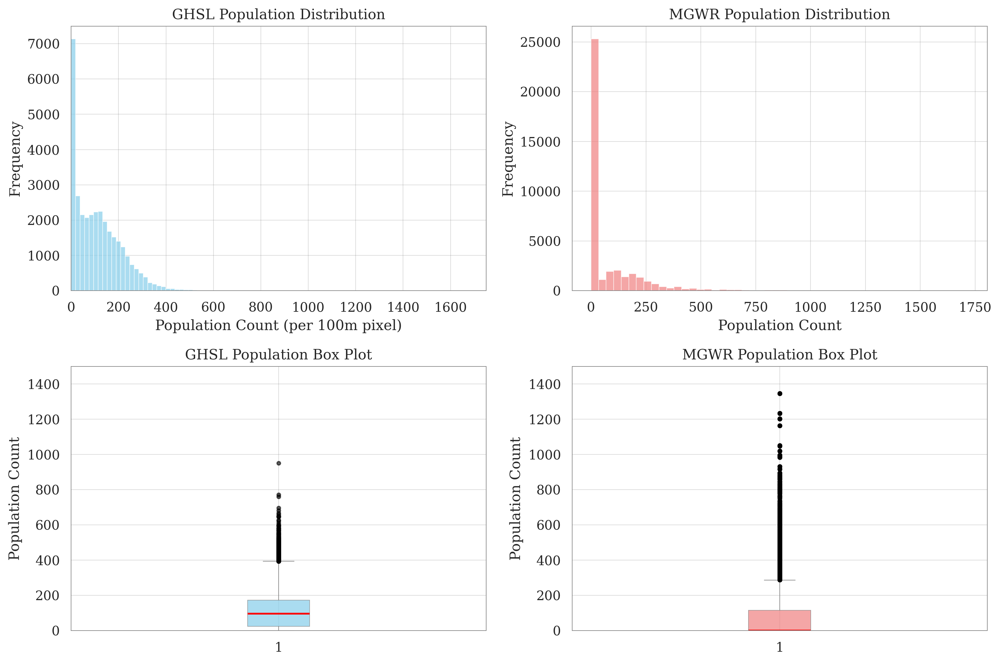
Figure 4.5: GHSL vs MGWR Population Distribution (per hectare)
Notable differences also emerge. The MGWR estimates exhibit a sharper spike at very low values, which largely reflects cells excluded under the residential mask rather than genuinely low-populated areas. In contrast, GHSL produces a smoother distribution, with more cells assigned to the mid-density range (200–400). At the high end, MGWR shows a heavier tail, with a greater number of cells exceeding 1,000 residents per hectare.
Overall, the two datasets align in their general distributional shape, but MGWR produces a more polarised outcome—many empty or low-population cells alongside a concentration of very dense ones. This reflects the methodological choice to restrict disaggregation strictly to residential built-up areas using locally estimated weights, whereas GHSL relies on a global building-volume proxy that spreads population more evenly. The latter approach allows consistent disaggregation worldwide, but it also has limitations: uniform global rules may overlook local land-use distinctions, accuracy depends on the resolution of built-up inputs, and recent changes—especially in rapidly growing or informal settlements—may be underrepresented. For these reasons, GHSL provides a useful benchmark for comparison, but should not be regarded as ground truth at the local scale.
4.1.4 Explanatory Variables Shaping Population Density in the MGWR
The MGWR results indicate that explanatory variables influence population density at different spatial scales. The intercept and light intensity operate at a local scale (bandwidth = 43 wards), POI kernel density at a regional scale (98 wards), and illuminated building volume density at a global scale (227 wards). This range demonstrates that population patterns are shaped simultaneously by neighbourhood-level dynamics and broader structural forces.
The spatial distribution of coefficients further underscores these heterogeneous effects (Figure 4.6):
Illuminated Building Volume Density (Global, BW = 227): Coefficients are consistently negative across the city (mean = −0.516, range = −0.544 to −0.483, SD = 0.013). Large contiguous areas remain significant after correction, revealing a robust and spatially stable inverse relationship: higher illuminated volumes are systematically associated with lower population density. Significant clusters are most apparent in northern and western wards, as well as some peripheral zones.
Nighttime Lights Intensity (Local, BW = 43): Coefficients vary in direction (mean = 0.298, range = −0.238 to 1.054, SD = 0.273), with positive patches in eastern and peripheral areas and negative values in parts of the centre. Only small pockets remain significant after correction, reflecting a highly localized and heterogeneous effect.
POI Kernel Density (Regional, BW = 98): Coefficients are generally positive (mean = 0.192, range = 0.061 to 0.545, SD = 0.144). Strong effects are concentrated along the southern and eastern corridors, where dense POI clusters coincide with higher residential density. Central wards and parts of the periphery show non-significant values, highlighting the uneven influence of POI kernel density.
Intercept (Local, BW = 43): Local intercepts vary from negative to positive (mean = 0.230, range = −0.357 to 0.771, SD = 0.322). Significant estimates cluster around the city core and isolated edge wards, indicating baseline differences in population density not captured by the current covariates.
![Coefficients Estimates for Explanatory Variables in the MGWR model: illuminated building volume density, nighttime lights intensity, POI kernel density and intercept. For each variable, the left panel shows raw parameter estimates, the middle panel displays significant and non-significant estimates without correction (non-significant in grey), and the right panel presents estimates after correction for multiple dependent hypothesis tests, where only statistically significant coefficients remain colored (red = negative, blue = positive).](thesis_images/04RE_mgwr_all_significant_coeffs.png)
Figure 4.6: Coefficients Estimates for Explanatory Variables in the MGWR model: illuminated building volume density, nighttime lights intensity, POI kernel density and intercept. For each variable, the left panel shows raw parameter estimates, the middle panel displays significant and non-significant estimates without correction (non-significant in grey), and the right panel presents estimates after correction for multiple dependent hypothesis tests, where only statistically significant coefficients remain colored (red = negative, blue = positive).
Key findings:
- Direction: Illuminated building volume density exerts a consistent negative effect, while POI kernel density shows a strong positive effect. Light intensity and the intercept display more fragmented influences.
- Scale: Explanatory factors operate across levels, from local (intercept, light intensity) to regional (POI kernel density) and global (illuminated volume).
- Significance: Illuminated volume shows the most robust and widespread effect, followed by POI kernel density; light intensity and the intercept are significant only in scattered clusters.
To sum up, the MGWR results demonstrate that population density in Jaipur is driven by both heterogeneous directions and multi-scale processes. The model highlights robust citywide effects of illuminated building volume, regionally concentrated influence of POI kernel density, and more localized variations linked to light intensity and intercept terms. This underlines the value of a multi-scale approach for decomposing urban population patterns.
4.2 Response to RQ1: Where Economic Activity levels are High – Economic Activity Index (EAI)
4.2.1 Correlation among Input Variables
Before conducting PCA, the correlations among the ten selected indicators aggregated to 500 m hexagon cells were examined. Figure 4.7 presents the correlation matrix.
The results show that population density, built-up density, road density, and nighttime lights are strongly and positively correlated (\(r \approx 0.6–0.8\)), indicating that they capture overlapping dimensions of urban development intensity and economic activity. In contrast, NDVI is strongly and negatively correlated with these variables, reflecting the trade-off between vegetation cover and built-up intensity. Large transport stations (e.g. airports) display only weak negative correlations with activity-related indicators, consistent with their distinct spatial separation from daily economic clusters.
These correlations indicate substantial shared variation, justifying PCA to condense them into latent dimensions while retaining contrasting signals (e.g. NDVI, transport stations) that help differentiate patterns.
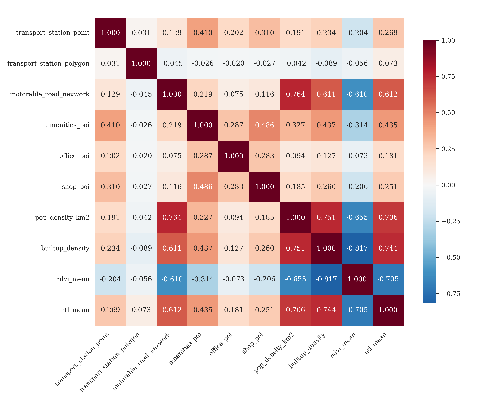
Figure 4.7: PCA Variables Correlation Matrix
4.2.2 PCA Results
The PCA results show that the first two components capture most of the shared variance among the indicators. The scree plot (Figure 4.8) indicates a sharp drop after the first component, with eigenvalues of 4.3 for PC1 and 1.6 for PC2, together explaining 58.7% of the total variance. This justifies focusing on PC1 and PC2 for interpretation and mapping.
The loadings (Table 4.2) highlight distinct roles of the indicators. PC1 (42.7% of variance) is shaped by strong positive contributions from population density, built-up density, road density, POI, and nighttime lights, with NDVI and large transport polygons contributing negatively. In practical terms, PC1 can be interpreted as a dimension of economic activity intensity: hexagons scoring highly are characterised by dense built-up form, higher population and road density, many POI, and bright nighttime lights, combined with low vegetation cover and little presence of large transport infrastructure. This configuration corresponds closely to the empirical notion of concentrated urban economic activity. Therefore, PC1 will be chosen to construct the Economic Activity Index (EAI).
PC2 (16.0% of variance) reflects a secondary dimension. It contrasts transport station points and office/shop POI against NDVI and large transport polygons, suggesting that this component differentiates localised commercial clusters from greener or large-scale infrastructural areas. In practice, PC2 highlights variations in the type of economic built environment, rather than the direct economic intensity.
The biplot (Figure 4.9) reinforces these relationships, showing built-up, population, road, and NTL vectors aligned, while NDVI and large transport polygons point in the opposite direction. Rather than isolated pairwise correlations, this configuration shows how PCA integrates divergent spatial signals—ranging from urban development and everyday POI density to green space and infrastructural scale—into interpretable components. These components reveal latent dimensions that organize Jaipur’s economic geography, offering a structured lens on urban heterogeneity.
Thus, the PCA enables a meaningful reduction in dimensionality, distilling complex spatial-economic patterns into interpretable components. PC1 captures the primary axis of economic activity intensity, while PC2 reflects a secondary contrast in urban morphology. Together, these two components provide the foundation for constructing the EAI and guiding subsequent cluster analysis.
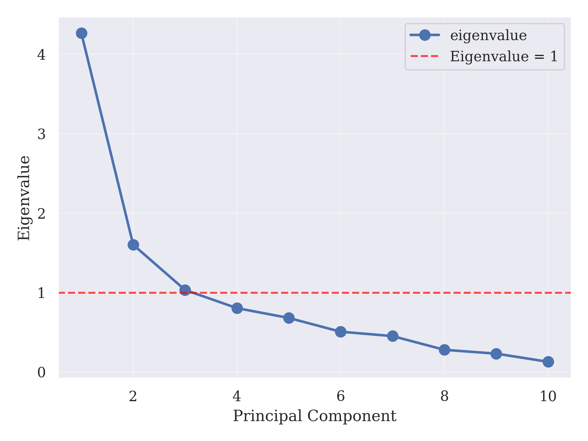
Figure 4.8: PCA Scree Plot
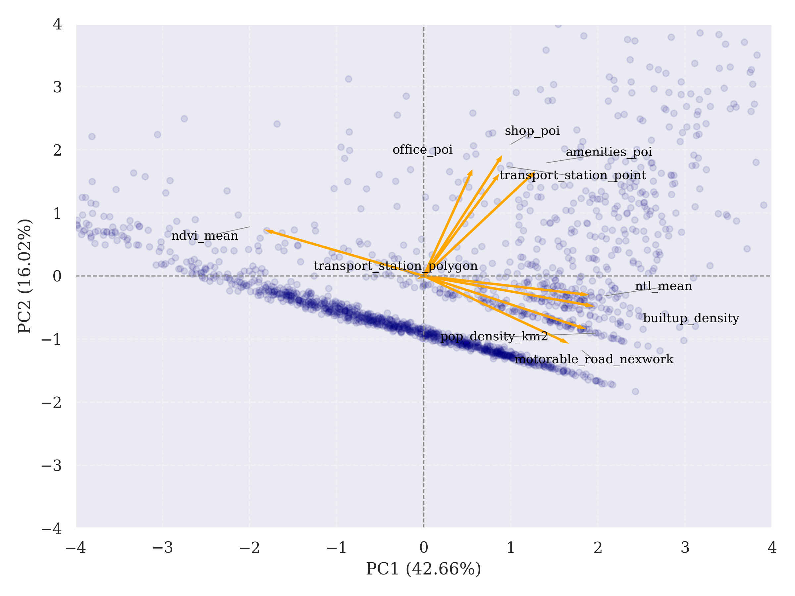
Figure 4.9: PCA Biplot
| Variable | PC1 Loading | PC2 Loading |
|---|---|---|
| builtup density | 0.432 | -0.126 |
| ntl mean | 0.419 | -0.079 |
| pop density km2 | 0.411 | -0.220 |
| motorable road network | 0.367 | -0.280 |
| amenities poi | 0.283 | 0.434 |
| shop poi | 0.199 | 0.502 |
| transport station point | 0.191 | 0.423 |
| office poi | 0.123 | 0.442 |
| transport station polygon | -0.009 | -0.006 |
| ndvi mean | -0.404 | 0.191 |
4.2.3 Spatial Patterns of Economic Activity
Built on the first principal component (PC1), an Economic Activity Index (EAI) was mapped across 500 m hexagonal grids (Figure 4.10). The resulting surface shows a continuous gradient of economic intensity across Jaipur. Highest values concentrate in the historic core and along major built-up corridors, while intensity declines progressively toward the periphery. Very low values appear in the northeast around mountainous and green areas such as Nahargarh and along city edges, where boundary truncation may accentuate discontinuities. This gradient broadly mirrors the distribution of population density and built-up extent, reinforcing the interpretation of PC1 as a proxy for urban economic activity.
While the EAI emphasises a smooth core–periphery gradient, k-means clustering of PC1–PC2 scores (k = 3) reveals discrete structural groupings within the city (Figure 4.11, Figure 4.12 and Figure 4.13):
- Cluster 1 : localised high-activity zones, often aligned with secondary centres and transport-accessible sub-districts.
- Cluster 2 : the bulk of the built-up fabric, representing medium-intensity areas with balanced but not extreme economic activity.
- Cluster 3 : peripheral low-activity zones, concentrated in hilly or green terrain and forming a distinct ecological type.
These two perspectives are complementary: the EAI captures the overall intensity gradient, while clustering differentiates categorical spatial types. This dual representation provides both a citywide overview of economic activity and the identification of distinct functional zones within Jaipur.
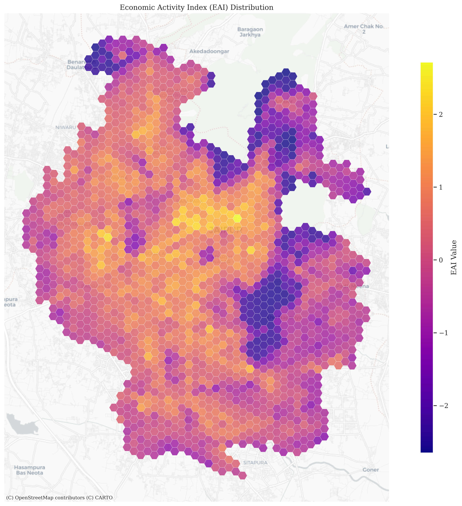
Figure 4.10: Economic Activity Index (EAI) Distribution
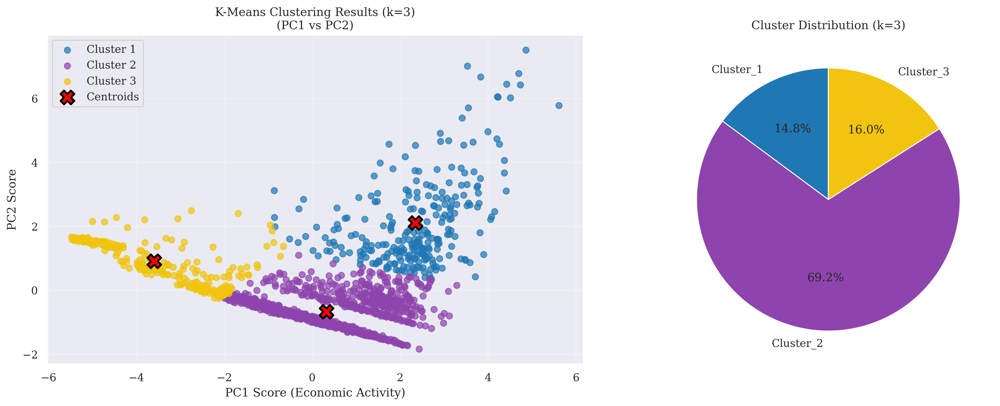
Figure 4.11: K-Means Clustering Results for EAI
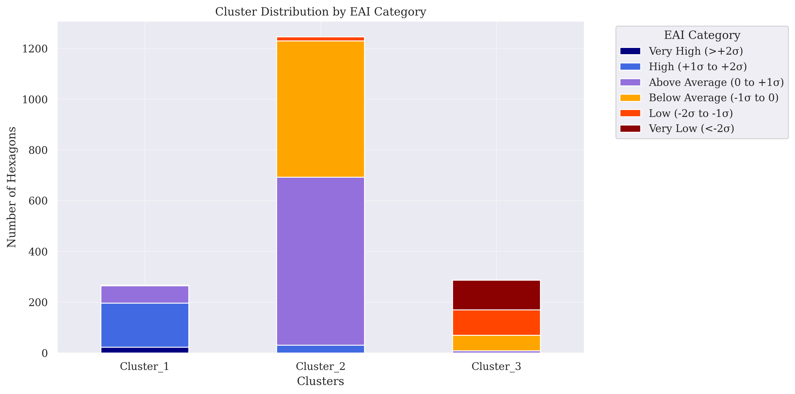
Figure 4.12: Composition of K-Means Clusters for EAI. Legend categories reflect z-score-based classification of EAI values.
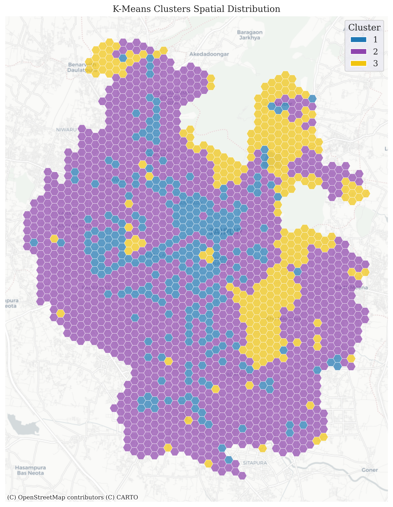
Figure 4.13: K-Means Clusters Spatial Distribution for EAI
4.3 Response to RQ2: GEE – Jaipur Urban Activities Analysis App
To address the second research question, the outputs of the MGWR-based population disaggregation and the Economic Activity Index (EAI) were embedded into an interactive Google Earth Engine (GEE) web application (Figure 4.14). Without delving into technical implementation, the app is presented as a proof of concept, showing how analytical outputs can be translated into a transparent and accessible tool for digital planning. . By allowing stakeholders to explore and interpret spatial data directly in a browser, the app lowers the technical barriers posed by conventional GIS software and supports more inclusive, evidence-based dialogue.
The application demonstrates three ways in which results can be mobilised for planning:
- Comparing neighbourhood populations: Users can draw custom polygons and instantly obtain population counts and histograms. This flexibility allows comparisons beyond ward boundaries, supporting discussions of uneven population densities and local service demand.
- Highlighting economic contrasts: Ward-level aggregation ranks areas by their average EAI, displaying the top ten as a clear entry point for identifying economic hotspots and areas of relative deprivation. This ranking function transforms abstract indices into a straightforward narrative of concentration and disparity.
- Interrogating indicator contributions: Users can switch between NDVI, nighttime lights, and road density layers to see how each indicator contributes to the composite EAI. This transparency enables scrutiny of the underlying assumptions and encourages informed debate on the drivers of urban economic activity.
These functions transform static analytical results into an interactive platform that is meaningful for both experts and non-experts. For planners, the app provides rapid access to disaggregated data without specialised software; for communities, it renders complex indicators into intuitive visualisations. In this way, the Jaipur Urban Activities Analysis App demonstrates how geospatial analysis, when coupled with cloud-based dissemination, can bridge the gap between technical research and public participation.
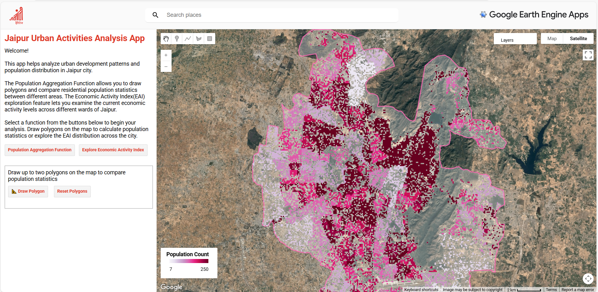
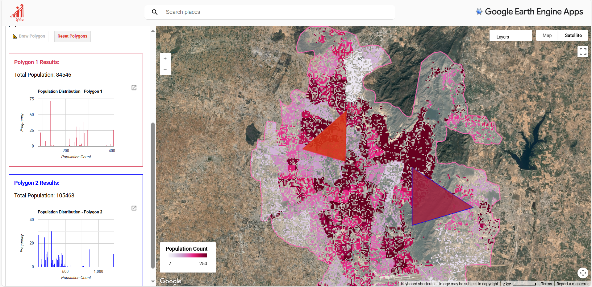
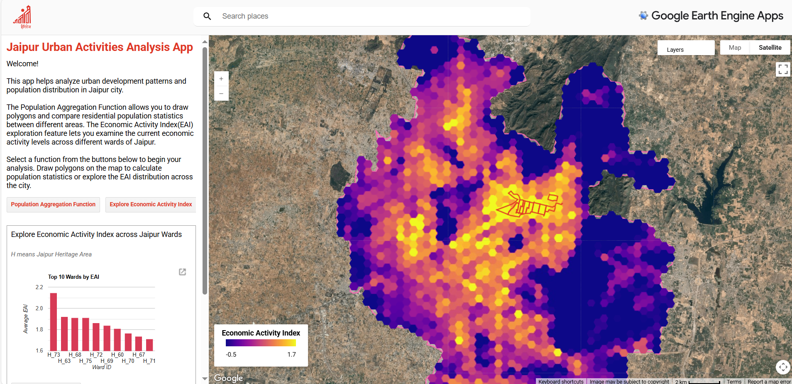
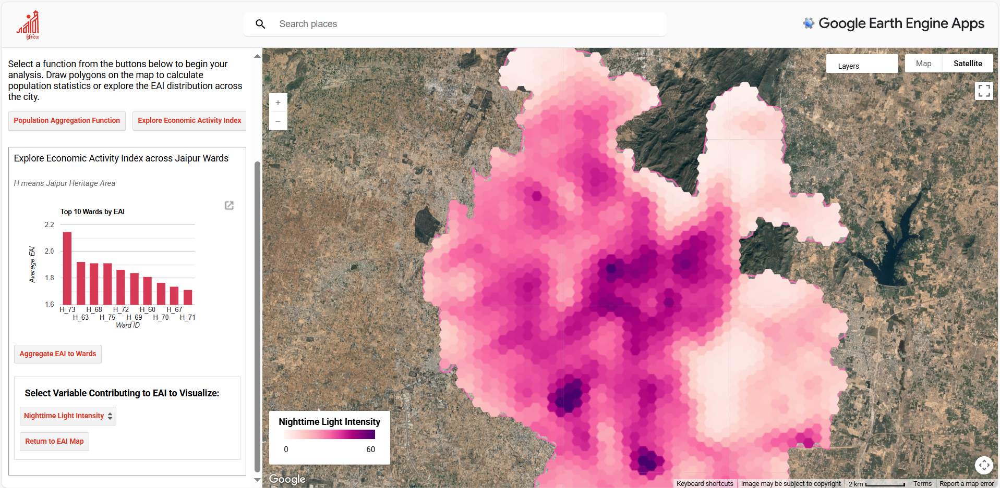
Figure 4.14: Screenshots of the Interactive Google Earth Engine (GEE) Web Application Developed for This Study. Access link in GitHub repo.
The findings across RQ1 and RQ2 demonstrate that remote sensing and open data can be effectively harnessed to estimate urban population distribution and economic activity in Jaipur, and that these outputs can be implemented into an accessible web application. Together, the analyses establish both methodological feasibility in a data-scarce context and practical relevance through interactive dissemination. Building on these results, the following Discussion reflects on their implications, limitations, and broader significance for digital urban planning.